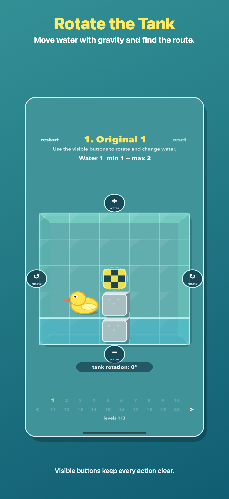
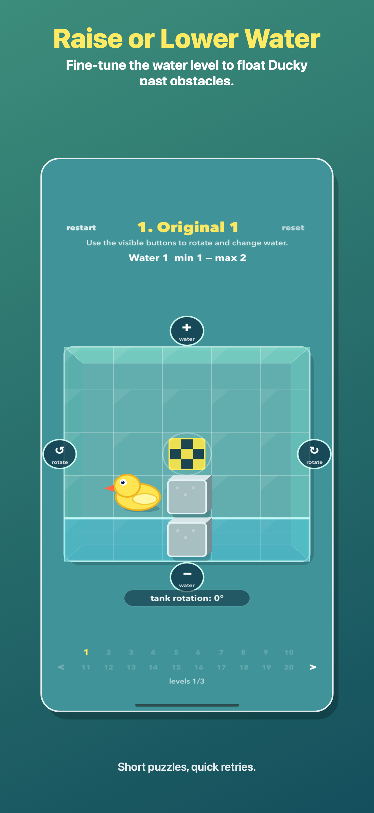

수조 전체를 돌려 중력으로 길을 바꿉니다.

규칙이 보이는 작은 퍼즐
각 레벨은 투명한 수조입니다. 움직이기 전에 더키, 깃발, 장애물, 물 높이를 보고 간단한 조작으로 풀 수 있습니다.
물을 채우고, 빼고, 드래그하거나 지원 기기에서 선택형 소리 조작을 사용할 수 있습니다.
계정이 필요 없고, 플레이에 네트워크 연결이나 클라우드 저장이 필요하지 않습니다.
스크린샷


가이드
유리 수조를 돌리고 물을 채우거나 빼며 짧은 수제 물리 퍼즐 속 더키를 깃발까지 안내하세요.